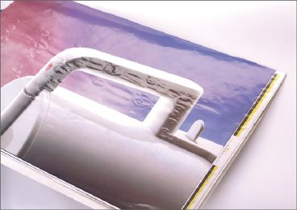
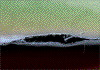
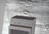
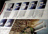
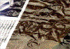
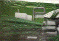
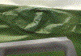

BLASENBILDUNG (BLISTERING) BEIM ROLLENOFFSET
|
Beim Durchlauf einer bedruckten Papierbahn
durch die Trockenstrecke der Rollenoffsetmaschine
kommt es partiell zu einem Anheben der
Bedruckstoffoberfläche. Das Erscheinungsbild
in Form von meist runden, scharf begrenzten Blasen
ist sowohl bei gestrichenen Papieren als auch bei
gestrichenen Kartons festzustellen.
Die in den bedruckten Flächen - vor allem in
Volltonflächen - auftretende Blasenbildung
beeinträchtigt in starkem Maße die
Qualität des Druckerzeugnisses (Abb. 1 und
Abb. 2).
|

|
Abb. 1: Blasenbildung im Rollenoffset.
|
|
|
|
Mögliche Ursachen:
|
|
|
|
Abb. 2: Blasenbildung im Rollenoffset.
|
|
|
|

|
|
Abb. 3: Querschnitt durch eine Blase (REM -
Aufnahme).
|
|
|
|

|
|
Abb. 4: Blasenbildung aufgrund zu hoher
Papierfeuchte.
|
|
|
|

|
|
Abb. 5: Blasenbildung bei einem leichtgewichtig
gestrichenen Papier.
|
|
|
|

|
|
Abb. 6: Vergrößerte Darstellung einer
Blasenbildung bei einem leichtgewichtig
gestrichenen Papier.
|
|
|
|

|
|
Abb. 7: Blasenbildung aufgrund einer
geschlossenen Papieroberfläche.
|
|
|
|

|
|
Abb. 8: Vergrößerte Darstellung der
Blasenbildung.
|
|
|
|

|
|
|
|
|
|
|
Bei der schockartigen Erhitzung der bedruckten Papierbahn in
der Trockenstrecke der Rollenoffsetmaschine - mit
Heißlufttemperaturen bis zu 300 °C - tritt eine
Wasserdampfbildung im Papiergefüge auf. Durch die
beidseitige Abdeckung mit dem Papierstrich und bei
beidseitigem Bedrucken mit hohen Farbschichtdicken kann der
Wasserdampf nicht entweichen. Es tritt eine Spaltung im
Papiergefüge und damit eine Blasenbildung in den
bedruckten Flächen auf (Abb. 3). Von der
drucktechnischen Seite wird eine Blasenbildung wesentlich
durch die Farbschichtdicke und die Heißlufttemperatur
in der Trockenstrecke beeinflusst.
Mit steigender Farbschicht sinkt die Luft- bzw. die
Dampfdurchlässigkeit der Papieroberfläche. Mit
steigender Heißlufttemperatur steigt die Menge und der
Druck des im Papiergefüge gebildeten Wasserdampfes.
Eine einheitliche Tendenz des Einflusses der Druckfarbe auf
die Blasenbildung - Pigmentkonzentration, Zügigkeit,
Absiedeverhalten - kann nicht festgestellt werden.
Papierbedingte Einflussfaktoren sind die Art des
Bindemittels, der Bindemittelanteil im Strich und die Art
des Streichpigmentes sowie die Oberflächenverdichtung
durch die Satinage.
Von sehr starkem Einfluss ist, wie zu erwarten, der
Feuchtigkeitsgehalt des Papiers, der bei gestrichenen
Rollenoffsetpapieren bei ca. 40 % Gleichgewichtsfeuchte
liegen sollte.
Doppelt und dreifach gestrichene Papiere werden vielfach in
einem Arbeitsgang als Format- und Rollenprodukt gefertigt.
Da von Formatpapieren eine Gleichgewichtsfeuchte um 50 %
gefordert wird, muss bei Rollenoffsetpapieren ein Kompromiss
gemacht werden. Besonders anfällig sind gestrichene
Hochglanzpapiere mit sehr dichter Oberfläche. Der
für eine gute Oberflächenfestigkeit bei
Offsetpapieren erforderliche, hohe Bindemittelanteil im
Strich vermindert dessen Porosität. Die deutliche
Verminderung der Reklamationen wegen Blasenbildung in den
letzten Jahren ist vor allem auf die Optimierung der
Strichzusammensetzung und der Satinage
zurückzuführen.
|
Mögliche Abhilfen:
|
|
Eine Verminderung der Heißlufttemperatur ist
sicherlich die beste und einfachste Möglichkeit, eine
Blasenbildung zu vermeiden. Um eine ausreichende
Verfestigung des Druckfarbenfilmes zu erreichen, muss
zwangsläufig die Druckgeschwindigkeit reduziert
werden.
Da eine Blasenbildung ausschließlich in beidseitig
intensiv bedruckten Flächen auftritt, kann sich eine
Reduzierung der Druckfarbenschichtdicke in den Bildtiefen -
z. B. durch Unterfarbenreduzierung (UCR) - positiv
auswirken.
Vor allem ist darauf zu achten, dass das Papier keinen zu
hohen Feuchtigkeitsgehalt aufweist (35 % rel. Feuchte bis 40
% rel. Feuchte). Die vornehmlich in Vollflächen
auftretende Blasenbildung kann, soweit es die
Oberflächenfestigkeit des Papiers zulässt, durch
Einsatz einer strengeren Farbe - bei geringerer Schichtdicke
- verringert werden. Bei vielen Trocknersystemen erfolgt die
Temperaturregulierung über Infrarot-Messgeräte,
die die Bahntemperatur des Papiers im Trockner messen. Dabei
ist zu berücksichtigen, dass es bei verschmutzter
Messoptik (Papierstaub, Mineralöldämpfe) zu
Fehleinstellungen der Trocknertemperatur und damit zur
Überhitzung der Papierbahn kommen kann.
Aus diesem Grund ist es empfehlenswert, die Messoptik
regelmäßig zu reinigen.
|
Beispiel(e):
|
|
Blasenbildung aufgrund zu hoher Papierfeuchte:
Beim Druck eines Prospektes im Rollenoffsetverfahren war in
den Vollflächen übermäßig starke
Blasenbildung reklamiert worden. In der Druckerei konnte an
Restrollen der Auflage der Feuchtigkeitsgehalt gemessen
werden. Die Werte lagen im Bereich von 55 % bis 65 % rel.
Feuchte.
Um Blasenbildung bei der Trocknung im Rollenoffset zu
vermeiden, wird eine verhältnismäßig
niedrige Rollenfeuchte von 35 % bis 40 % rel. Feuchte
empfohlen. Im vorliegenden Fall kam es wegen des hohen
Feuchtigkeitsgehalts des Papiers und den hohen Temperaturen
in der Trockenstrecke zu übermäßiger
Verdunstung des Wassers im Papiergefüge und damit zu
der reklamierten Blasenbildung (Abb. 4).
Blasenbildung durch Überhitzung der Papierbahn:
Beim Druck eines Versandhauskataloges auf einem
leichtgewichtig gestrichenen Papier im Rollenoffsetdruck war
Blasenbildung in den Vollflächen festgestellt worden.
Am verdruckten Papier konnte ein normaler
Feuchtigkeitsgehalt von 38 % rel. Feuchte und eine normale
Luftdurchlässigkeit festgestellt werden.
Rückfragen in der Druckerei ergaben, dass die
Maschinengeschwindigkeit voll ausgenutzt wurde und dass zur
Gewährleistung einer einwandfreien Durchtrocknung der
Druckfarbe die Heizleistung erhöht wurde. Die
Bahntemperatur nach der Trockenstrecke wurde mit 155 °C
angegeben. Der Grund für die aufgetretene Blasenbildung
war also eine zu starke Überhitzung der Papierbahn in
der Trockenstrecke (Abb. 5 und Abb. 6).
Blasenbildung bei einem gestrichenen Papier mit einer
geschlossenen Oberfläche:
Wie die Bilder Abb. 7 und Abb. 8 demonstrieren, war beim
Druck eines gestrichenen Papiers im Rollenoffsetverfahren
eine übermäßig starke Blasenbildung
aufgetreten. Beim verdruckten Papier lag eine
verhältnismäßig hohe Strichmenge von 25
g/m2 und Seite mit einem Bindemittelanteil von 16
%, bezogen auf die Strichmenge, vor. Die Bestimmung der
Luftdurchlässigkeit ergab extrem niedrige Werte. Als
Ursache für die aufgetretene Blasenbildung ist also die
relativ hohe Strichmenge in Verbindung mit hohem
BindemitteIanteil anzusehen. Es lag also ein gestrichenes
Papier mit einer geschlossenen Oberfläche von geringer
Porosität vor, das ein Verdampfen der Feuchtigkeit
durch die Papieroberfläche in der Trockenstrecke der
Rollen-Offsetmaschine nicht ermöglichte .
|
Allgemeine Hinweise:
|
|
Für den Reklamationsfall:
Rel. Feuchte des Auflagenpapiers vor dem Druck
feststellen.
20 Blatt des unbedruckten Auflagenpapiers (DIN A 4)
müssen zurückgelegt werden. Mit Hilfe dieses
unbedruckten Auflagenpapiers kann durch einen
Standard-Blistertest im Labor geprüft werden, ob der
Blasenbildung papierbedingte Ursachen zugrunde liegen.
Einstellungen des Heißlufttrockners ermitteln.
Reklamierte Muster sicherstellen.
Ergänzende Literatur:
FALTER, K.-A; KIRMEIER, M; TONHÄUSER, W.:
Ermittlung der Ursachen der Blasenbildung bei der
Heißlufttrocknung im Rollenoffset.
Wiesbaden/München: Bundesverband Druck E.V. / FOGRA,
1994 (42.009) - Forschungsbericht
FALTER, K.-A:
Die mikro- und makroskopische Beurteilung von Fehlern an
Druckerzeugnissen.
München: FOGRA, 1980 (3.003) - Forschungsbericht
FALTER, K.-A; OBST, G:
Fehler an Druckerzeugnissen - Ursachenfindung durch
Rasterelektronenmikroskopie und
Röntgenmikroanalyse.
München: FOGRA, 1996, Praxis Report 48
|
|
|
|
|
|
|
Kontakt:
wimmerm@fogra.org
|
Bla-mw-200112
|